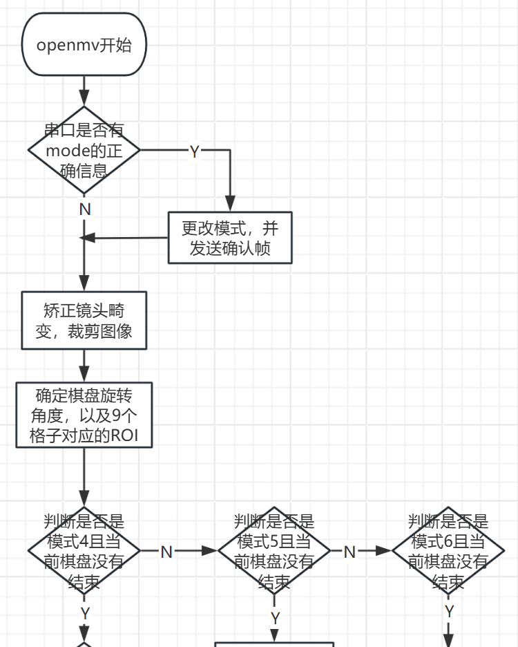
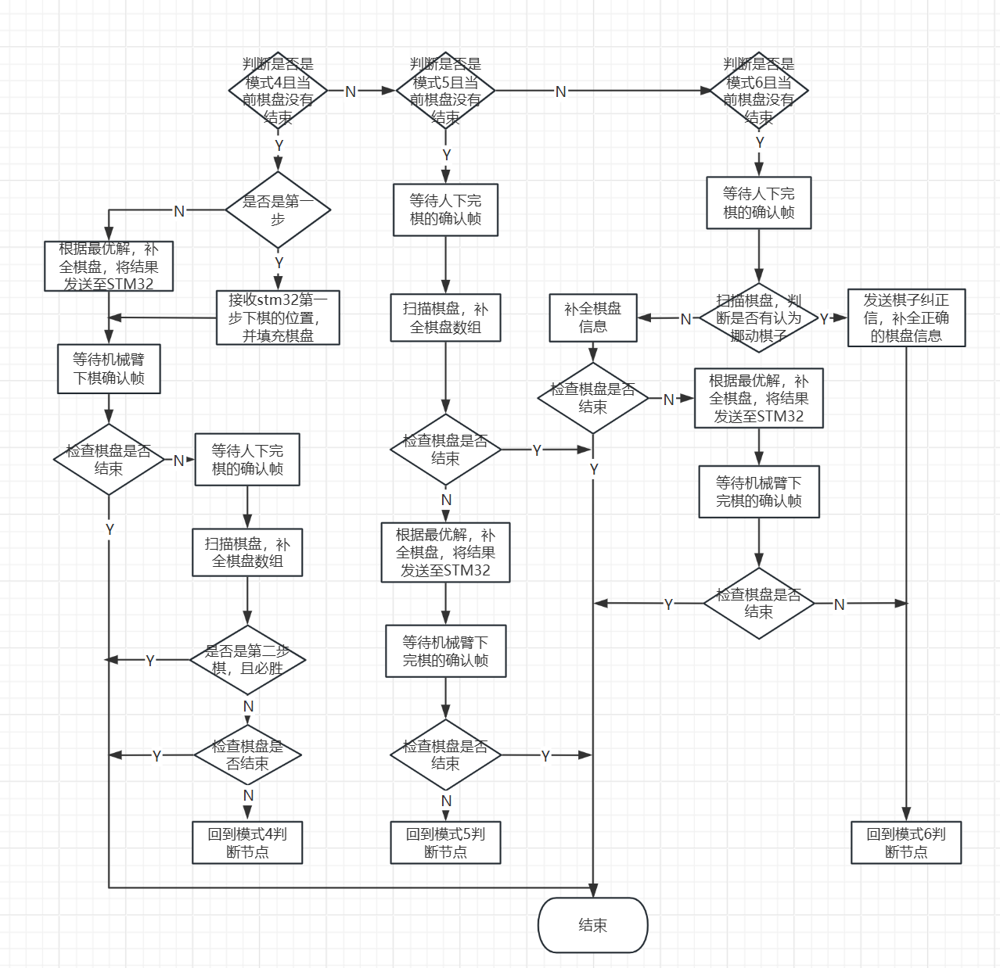

写在前面
此文档用于记录、以及介绍自己当时写的代码以及思路，另外让自己在重温一遍代码，感受一下自己当时有多蠢。此文档并没有改进打算，思路仅供参考。
项目简介
使用STM32F103C8T6+openmv+串口屏。其中
- STM32F103C8T6。负责接收openmv的下棋指令，控制机械臂下棋，以及转发(至openmv)人下棋的位置，像串口屏发送棋盘状态。
- openmv。识别棋盘和棋子的状态；选择最优下棋方案，并向stm32发送下棋指令；识别人故意挪动棋子，并发送复位指令。
- 串口屏。显示棋盘状态；提供下棋按钮，向stm32发送下棋位置；显示机械臂单次操作所耗时间。
因为我这里只有串口屏和openmv的代码，而串口屏只是一个简单的界面设计和显示，没什么可以讲的，使用这里只有openmv的程序流程图（有点不标准，见谅）。
 
选材
- 棋盘棋子选材。
颜色选择：由于题目只要求了棋子的颜色，并未指定棋盘的背景颜色，因此棋盘最好选择与黑白对比度比较强的、不容易受光照影响的颜色。我们队选择的是红色。
材料选择：棋盘是由A4纸彩印的；棋子方面，由于我们是控制电磁铁来进行拿放棋操作，因此方便使用贴有黑白两种颜色的圆形铁片(刚好有符合题目要求的圆形贴纸，铁片大小也符合题目要求，这个是由老师给我们提供的)。
其实我后面还看到过别人用软管管来拿放棋操作（就是气压差，用管子把棋子吸起来，自己当时完全没想到这种方案）。参考视频 - 摄像头选材。
摄像头都有好几种吧，只是我们之前就是一直使用openMV，所以就只好选择openMV咯。其实也可以用树莓派或者K20，K20没怎么了解过，用树莓派的话，单独一个树莓派就可以了，也不用像我们一样STM32F1+openmv+串口屏这么麻烦，而且还有信号传输不太稳定的问题
代码分析
棋盘识别
在棋盘格子序号确定的情况下，如果你已经有了1~9号格子对应的中心坐标，那么扫描棋盘就非常方便。因此一开始就要确定9个格子的中心坐标。下面是对应代码（和比赛使用的代码有区别，并不保证能直接使用，但思路可供参考）。
1 | # 完善棋盘的九个格子的中心坐标 |
有了1~9号格子对应的中心坐标，那么扫描棋盘就很简单了，只需要分别检测中心坐标周围（比棋子的范围稍小一点）是黑色还是白色，然后更改储存棋盘棋子的列表。如果是人可能移动棋子，那么还得将现在的棋盘与下之前的棋盘相比较。代码这里就不贴了，太长了，但是我把链接放文末了。
关于下棋策略，我这里是分别判断所有情况，比较笨的方法。
对此次的感想
- 毕竟是自己写的，当时为了结果好多地方都没思考完全，导致整个结构就很混乱。
- 另外每个模块间的串口通讯也没设计好，收发-应答没有写好，可能也正是这个原因才导致评测的时候系统卡死（悲）。下次应该准备好收发-应答，最好多一个校验，没有应答就重发之类的。
- 还有，注释也要写清楚，这次看之前的代码差点看不懂了。
源码地址